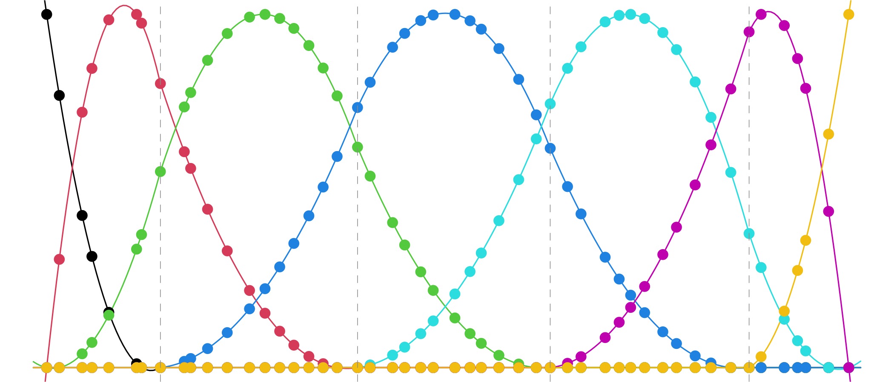

These are not B-splines:

These are called discrete B-splines. They span a function space called discrete splines, which are analogous to splines, but defined in terms of a suitable discrete notion of smoothness.
Discrete splines have continuous discrete derivatives at their knots (rather than continuous derivatives, as splines do).
They have important computational properties, like the fact that interpolation within the space of discrete splines can be done in constant-time.
They are intimately connected to trend filtering (they provide the basis representation that underlies the trend filtering estimator).
For more background, see the monograph: “Divided differences, falling factorials, and discrete splines: Another look at trend filtering and related problems”.
The dspline package provides tools for computations with discrete splines. The core routines are written in C++ for efficiency. See the reference index for a summary of the tools that are available.
Installation
To install the released version from CRAN:
install.packages("dspline")To install the development version from GitHub:
# install.packages("pak")
pak::pak("glmgen/dspline")